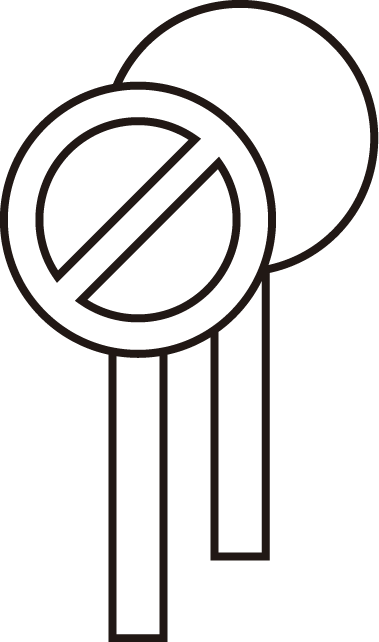
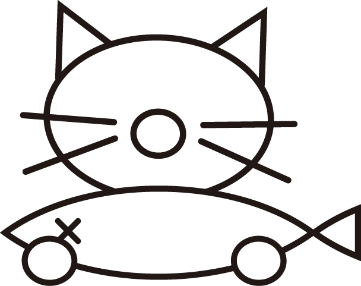
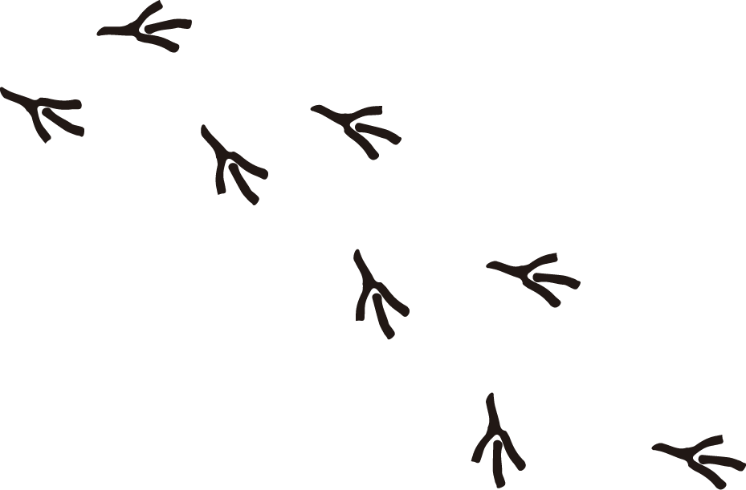
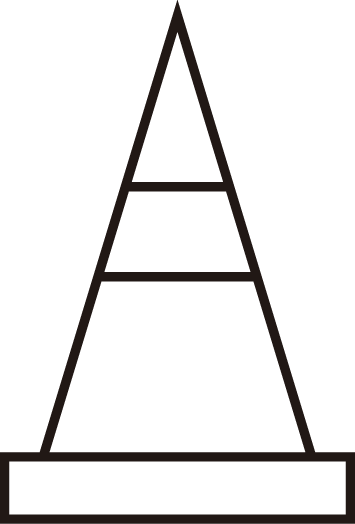

오늘의 프로그램을 선택해 주세요

프로그램 ①
도형 카메라
세모, 네모, 동그라미로
골목의 풍경을 담는다
→

프로그램 ②
캐릭터 메이커
도시를 산책하는
또 다른 존재를 그린다
→

프로그램 ③
산책 기록
GPS로 걸어온 길과
메모를 지도에 남긴다
→

프로그램 ④
만든 게임들
이태원에서 만든
작은 웹 게임 모음
→
프로그램 ⑤
옥상 파쿠르
폰을 기울여 달리고
건물 사이를 뛰어넘는다
→